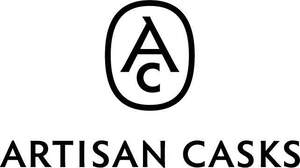

Trade Mark Journal No.2025/044 31 October 2025
UK00004278856 16 October 2025 (33,35)

- Class 33
- Whisky; whiskey; scotch whisky; bourbon; rye whisky; malt whisky; blended whisky; cream whisky; alcoholic beverages containing whisky; whisky-based liqueurs; whisky-based cocktails; whisky-basedcocktail mixes; alcoholic essences, extracts, miniatures and samples; vintage whiskies; alcoholic spirits; insofar as concerns scotch whisky and scotch whisky-based beverages, complying with the specifications of the PGI Scotch Whisky.
- Class 35
- Retail and wholesale services connected with the sale of printed matter, calendars, diaries, posters,charts, photographs, labels, books, magazines, pamphlets, maps, guides, umbrellas, luggage, bags,wallets, cases, glasses, drinking vessels and barware, jugs, bottles, crockery, serving plates, dinnerplates, paper plates, picnic crockery, porcelain, flasks, hip flasks, clothing, footwear, headgear, t-shirts,polo shirts, shirts, sweatshirts, rugby shirts, football shirts, sports shirts, sleeveless tops, vests, jerseys,leggings, trousers, tracksuits, joggers, shorts, hooded tops, fleeces, caps, baseball caps, beanies,woollen hats, visors, training shoes, sports shoes, running shoes, socks, boots, gillets, tabards, tank tops, face masks, jackets, sports jackets, formal jackets, tweed jackets, suit jackets, dinner jackets, cagoules,waterproof clothing, insulated clothing, corporate uniforms, underwear, pyjamas, swimwear, fancy dress,spirits, whisky, whiskey, bourbon, rye whisky, malt whisky, blended whisky, cream whisky, alcoholic beverages containing whisky, whisky based liqueurs, flavoured alcoholic spirits, cocktails and/or cocktail mixes incorporating alcoholic spirits, fruit based beverages incorporating alcoholic spirits, alcoholic essences and extracts, cooking spirits, miniatures and samples of spirits, vintage spirits, provided via retail stores, mail order or by means of telecommunications, including apps and the internet; promotion of products and services of third parties through sponsoring arrangements; loyalty, incentive and bonus program services; advertising, promotional and marketing services; advertising and marketing services provided by means of social media; advertising and marketing services provided by means of blogging; advertising of the goods of other vendors, enabling customers to conveniently view and compare the goods of those vendors; advertising services provided over the internet; business management advice and assistance; business planning and organisation services; preparation and publication of publicity,advertising, marketing, and/or promotional texts and materials; arranging and conducting of talks and tastings for promotional, marketing and/or advertising purposes; distribution and dissemination of advertising, marketing, and/or promotional matter and information; provision and distribution of promotional samples; planning and conducting of trade fairs, exhibitions and presentations for commercial or advertising purposes; consultancy and advisory services in the field of business strategy; advisory,management, promotion, advertising and marketing services relating to franchising, franchisors,franchisees and/or licensees of business concepts and ideas; business project management; management of business projects [for others]; procurement services; procurement of contracts [for others]; procurement of goods for business; merchandising; product merchandising; product merchandising for others; brand and product creation, development and advertising; consultancy,information and advisory services relating to all of the aforesaid services.
The Scotch Malt Whisky Society Limited
Representative: Harper Macleod LLP